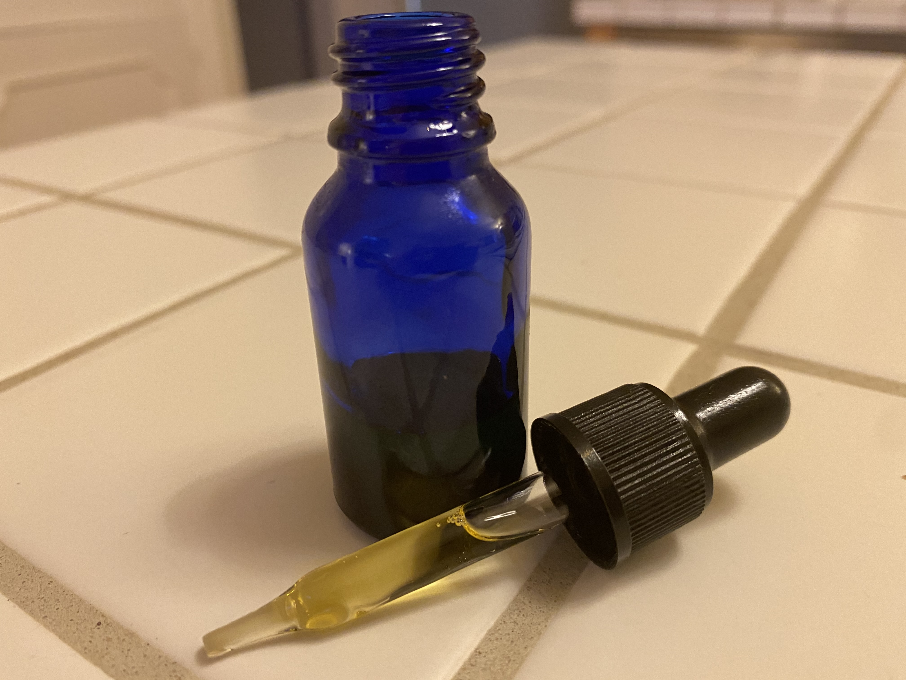
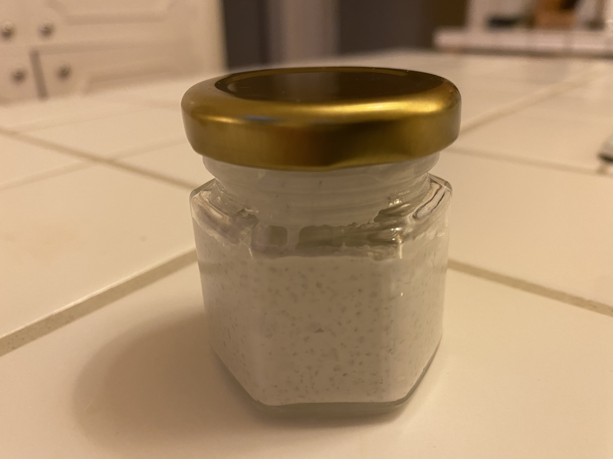

Soaps:
These two soap products are both made with a base of honey and oats. Each is given unique scent with shavings mixed in such as orange on the left, and rose on the right. They can be crafted to the desired scent that a customer is looking for making it a fun and easy experence when ordering.


Other Products:
These two products are soon to be perfected, which are facial oils, and toothpaste. The facial oil which you can see on the left is used for regular application to keep skin healthy, it can be customized to any essential oil scent that a cutomer may desire. The toothpaste on the right, is also made with essential oils and natural ingredients to give it the toothpaste consistency. It comes in mint, but cinnamon can be added for extra flavor.
 